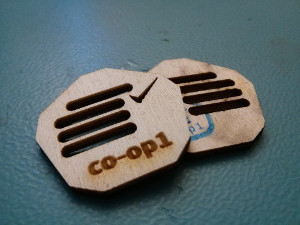
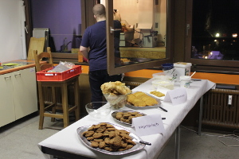
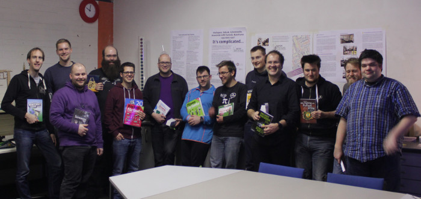

co-op1: Wartelisten-Projekte
Datum: 06.+07.02.2016 Beginn: Samstag um 16 Uhr Abschluss mit Preisvergabe: Sonntag um 20 Uhr
Am 6. und 7. Februar fand im KtT der erste Hackathon im Space 3.0, die sog. co-op, statt.

Das Thema der co-op1 war “Wartelisten-Projekte”. Jeder kennt es, das eine Projekt, das einen seit Ewigkeiten reizt, für das man sich aber nie die nötige Zeit nimmt. Diese Auftaktveranstaltung war dazu da, eben diese Projekte in Angriff zu nehmen. Für Teilnehmer ohne ein solches Projekt gab es eine Liste von Space-Projekten, die auf der Space-eigenen Warteliste gesammelt wurden.
Ungefähr 15 Teilnehmer versammelten sich zusätzlich zum regulären Space-Betrieb im Mainframe und stellten zunächst in der Lounge ihre Projektideen vor. Anschließend fanden sich die Projektgruppen zusammen, die sich zum Teil auch schon vorher verabredet hatten. Da viele ESP8266-Projekte auf den Wartelisten der Teilnehmer standen, das nötige Know-How jedoch nicht bei allen ausreichend vorhanden war, erklärte sich ein ESP-erfahrener Teilnehmer bereit, einen kurzen Crashkurs in die Hardware zu geben.
Fortan wurde im Space verteilt fleißig an den Projekten gearbeitet. Da die Teilnehmer hauptsächlich Elektronik-Projekte bearbeitet haben, waren die von Watterott gespendeten Ersa-Lötstationen sehr hilfreich, um ein gleichzeitiges Arbeiten aller Teilnehmer zu ermöglichen. In regelmäßigen Abständen wurde sich wieder in der Lounge versammelt, um über Projektfortschritte und Probleme zu berichten. So wurden z.B. auch Laser-Operatoren an Projekte vermittelt, die noch ein Gehäuse für ihre Platine benötigten.

Um 20:00 gab es dann ein gemeinsames Abendessen und anschließend wurde bis spät in die Nacht gewerkelt. Das führte unter anderem dazu, dass es sich Sonntag erst gegen Nachmittag gefüllt hat, und wir den geplanten Abschluss der Veranstaltung um zwei Stunden auf 20:00 verschoben haben. Sonntag gab es den ganzen Tag über Frühstück zum Selbst-belegen. Der KtT stellte außerdem für beide Tage ein paar Freigetränke.
Am Abschluss der Veranstaltung wurden dann alle Projekte noch einmal vorgestellt, auch wenn einzelne davon an dem Abend nicht ganz fertig geworden sind. So hatten wir z.B. neue Ambient-Beleuchtung für unsere Freifläche bekommen, die über WLAN steuerbar sind. Weitere Space-Projekte umfassten Arbeiten an einem neuen Schließsystem, der umfassenden Erfassung von Space-Temperatur und -Luftfeuchtigkeit, einem Prototyp für eine Handy-Ladestation, sowie dem Wiederbeleben einer stillgelegten Tochter-Bahnhofsuhr und einer Space-Status-Anzeige für den Conference-Raum. Andere Teilnehmer haben neue Technologien, namentlich MQTT und Perl6, erforscht und kleine Software-Experimente damit umgesetzt. Auch ein Audio-Multiplexer mit je 8 Ein- und Ausgängen war unter den Wartelisten-Projekten.
Jeder Teilnehmer hatte nun die Möglichkeit, seinen drei Lieblingsprojekten jeweils ein Stimmen in Form eines gelaserten Abstimmtokens zu geben. Die Anzahl der erhaltenen Tokens pro Projekt bestimmte dann die Reihenfolge, in der die Teilnehmer sich ihren Preis aussuchen konnten. Diese Sachpreise wurden uns dankenswerterweise von weiteren Sponsoren zur Verfügung gestellt. O’Reilly und der dpunkt Verlag haben uns dazu ein gemeinsames Bücherpaket zugeschickt und getdigital steuerte einen Bausatz für ein Da-Vinci-Katapult bei.
